The AJAXson 5
by Trevor Masinelli - STLCC 101 | JavaScript
What kind of Jackson 5 related GIF do you want?
Continue...
Not a robot? Then answer this riddle!
If the band members all had twins,
they'd be called the Jackson
GIF me!
